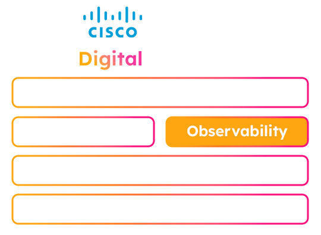

←

Splunk
Observability
Find, fix, and optimize faster — from frontend to backend with OpenTelemetry and AI.
Observability Cloud
Technical Deep Dive
Cisco AI PODs +
Splunk Observability
O11y Cloud
Overview